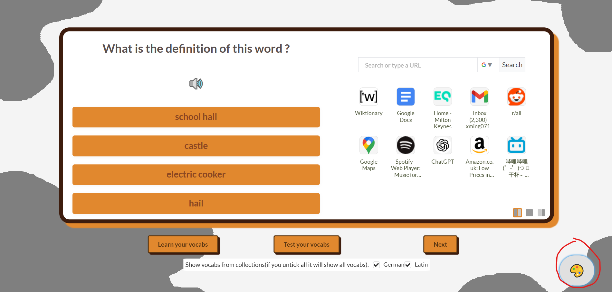
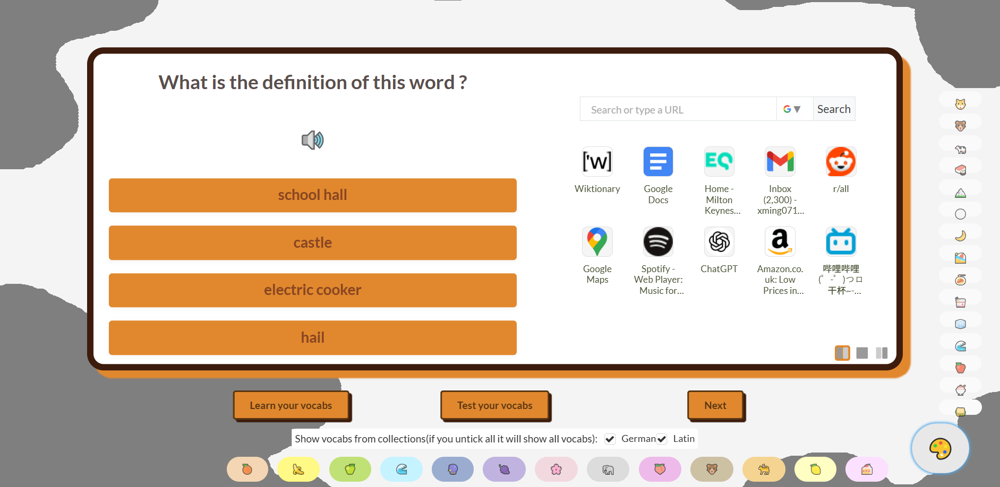
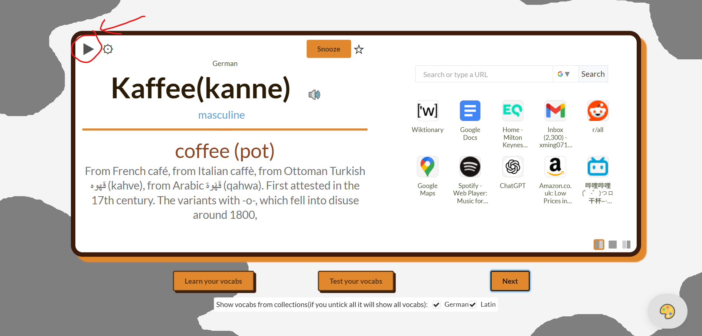
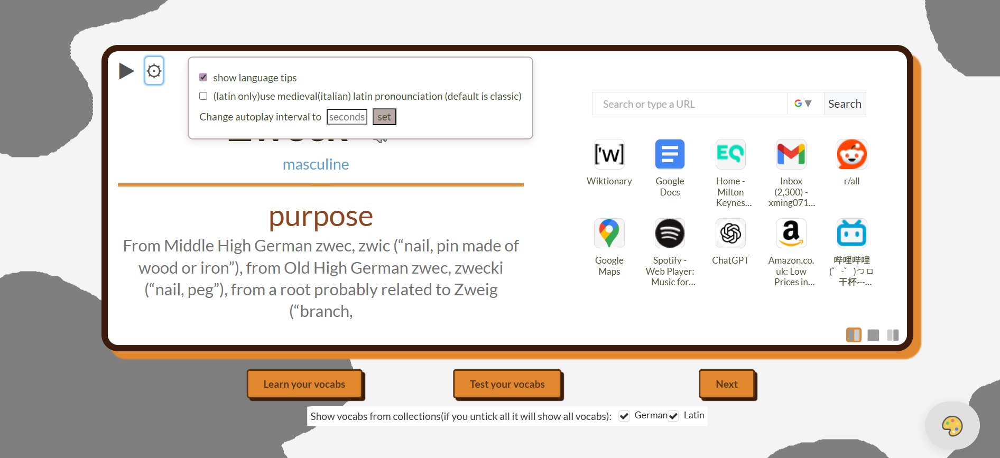

📚 FiLZ Flashcard System: User Guide
Master your vocabulary with powerful management, testing, and customization features.
1. Core Learning: Flashcards
- Everytime you open a new tab, a random word shows up. If you focus a word, it will show up more often. Sometimes quizzes will show up too.
- To listen to the pronounciation: click the speaker icon next to the word to hear the correct pronunciation.
- Focus: Mark the word as a favorite using the star icon for it to be shown more frequently.
- Test/Learn: Use the bottom menu options to test or learn your vocabs.

- Personalize the application's visual theme to suit your preference and reduce eye strain.
- Action: Navigate to the settings menu (visible in the first image).
- Selection: Choose your preferred color palette from the available options (as shown in the second image) to instantly change the look and feel of the application.


- Press the 'Play' button at the left top of the flashcard to let it automatically refresh. Press the cog button next to it for settings

